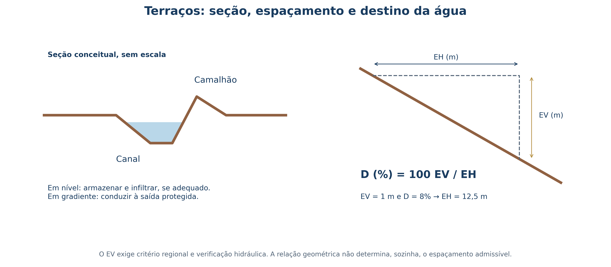
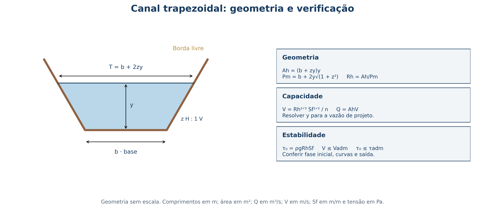

7 Planejamento Conservacionista, Terraceamento e Canais Escoadouros
7.1 Objetivos de aprendizagem
Ao final deste capítulo, o leitor deverá ser capaz de:
- Medir desníveis e distâncias em campo, calcular a declividade média ponderada de encostas heterogêneas e conferir o fechamento de levantamentos altimétricos;
- Enquadrar glebas rurais no Sistema de Capacidade de Uso das Terras (Classes I a VIII) utilizando a microbacia hidrográfica como unidade de planejamento;
- Integrar práticas edáficas, vegetativas (Sistema Plantio Direto, adubação verde, cobertura morta e rotação de culturas) e mecânicas antes de dimensionar obras de terra;
- Dimensionar o espaçamento vertical (\(EV\)) e horizontal (\(EH\)) e a seção transversal de terraços em nível e em gradiente;
- Dimensionar canais escoadouros vegetados pela equação de Manning, verificando velocidade e tensão trativa admissíveis passo a passo.
7.2 Clinometria e levantamento altimétrico em campo
Todo projeto de manejo e conservação do solo e da água começa pela medição rigorosa do relevo. Em campo, é comum confundir a declividade em porcentagem (\(D\%\)) com o ângulo de inclinação (\(\theta\)) em graus. Embora ambas descrevam a inclinação da superfície em relação à horizontal, suas escalas numéricas são completamente distintas:
\[ D(\%) = 100\,\frac{\Delta z}{L_h} \qquad \theta = \arctan\!\left(\frac{\Delta z}{L_h}\right) \tag{7.1}\]
Na Equação 7.1, \(\Delta z\) representa o desnível vertical entre dois pontos e \(L_h\) representa a distância horizontal medida entre eles, expressas na mesma unidade de comprimento (metros com metros, ou centímetros com centímetros). Uma encosta em que se sobe \(100\text{ m}\) na vertical ao longo de \(100\text{ m}\) horizontais apresenta \(\theta = 45^\circ\), mas sua declividade é \(D = 100\%\), e não \(45\%\). Quando uma rampa de \(100\text{ m}\) apresenta \(8\text{ m}\) de desnível, tem-se \(D = 8\%\) e \(\theta = \arctan(0{,}08) \approx 4{,}57^\circ\).
Em terrenos agrícolas reais, a inclinação raramente é uniforme do topo ao sopé. Um erro frequente consiste em medir três ou quatro segmentos de encosta de comprimentos diferentes e calcular a média aritmética simples das porcentagens. O procedimento fisicamente correto consiste em ponderar cada segmento pelo seu comprimento horizontal, dividindo o desnível acumulado pela distância horizontal total:
\[ D_{\mathrm{média}}(\%) = 100\,\frac{\sum_{i=1}^{n} \Delta z_i}{\sum_{i=1}^{n} L_{h,i}} \tag{7.2}\]
Um levantamento com nível de mangueira foi executado em quatro lances consecutivos descendo uma vertente, registrando-se as leituras nas réguas de montante (\(L_{\mathrm{mont}}\)) e de jusante (\(L_{\mathrm{jus}}\)) e as respectivas distâncias horizontais (\(L_{h,i}\)):
- Lance 1 (\(L_{h,1} = 12\text{ m}\)): \(L_1 = 32{,}0\text{ cm}\), \(L_2 = 23{,}0\text{ cm} \implies \Delta z_1 = 32{,}0 - 23{,}0 = 9{,}0\text{ cm}\);
- Lance 2 (\(L_{h,2} = 8\text{ m}\)): \(L_3 = 38{,}0\text{ cm}\), \(L_4 = 21{,}0\text{ cm} \implies \Delta z_2 = 38{,}0 - 21{,}0 = 17{,}0\text{ cm}\);
- Lance 3 (\(L_{h,3} = 11\text{ m}\)): \(L_5 = 28{,}0\text{ cm}\), \(L_6 = 19{,}8\text{ cm} \implies \Delta z_3 = 28{,}0 - 19{,}8 = 8{,}2\text{ cm}\);
- Lance 4 (\(L_{h,4} = 15\text{ m}\)): \(L_7 = 25{,}9\text{ cm}\), \(L_8 = 22{,}3\text{ cm} \implies \Delta z_4 = 25{,}9 - 22{,}3 = 3{,}6\text{ cm}\).
Somando os desníveis no mesmo sentido, obtém-se \(\sum \Delta z_i = 9{,}0 + 17{,}0 + 8{,}2 + 3{,}6 = 37{,}8\text{ cm} = 0{,}378\text{ m}\). A distância horizontal total é \(\sum L_{h,i} = 12 + 8 + 11 + 15 = 46{,}0\text{ m}\). Aplicando a Equação 7.2:
\[ D_{\mathrm{média}} = 100 \times \frac{0{,}378}{46{,}0} = 0{,}822\% \]
Caso o mesmo levantamento tivesse sido feito com um pé-de-galinha de abertura fixa igual a \(3{,}0\text{ m}\) em seis lances consecutivos, registrando desníveis individuais de \(4, 8, 5, 10, 8\) e \(7\text{ cm}\), teríamos \(\sum \Delta z_i = 42\text{ cm} = 0{,}42\text{ m}\) em \(L_h = 6 \times 3{,}0 = 18{,}0\text{ m}\), resultando em \(D = 100 \times (0{,}42/18{,}0) = 2{,}33\%\).
A escolha do instrumento depende diretamente da tolerância do projeto (Tabela 7.1). Pequenos erros de leitura que são aceitáveis ao locar uma faixa de capim-vetiver em nível podem inviabilizar um terraço em gradiente de \(0{,}3\%\), invertendo a declividade do canal e causando acúmulo localizado de água seguido de rompimento do camalhão.
| Equipamento | Aplicação Principal | Cuidado Crítico de Calibração e Operação |
|---|---|---|
| Pé-de-galinha (nível tipo A) | Locação de curvas em nível e cordões vegetativos | Calibrar por inversão dos apoios nos mesmos dois pontos; a referência real de nível é o ponto médio entre as duas marcas |
| Nível de mangueira | Transferência de cotas e declividades suaves em campo | Eliminar completamente bolhas de ar, evitar dobras e aguardar a estabilização dos meniscos antes da leitura |
| Clinômetro | Reconhecimento expedito da declividade de encostas | Manter visada paralela ao terreno usando alvo na mesma altura do olho do observador |
| Nível óptico ou laser | Locação de terraços em gradiente (\(0{,}2\text{--}0{,}5\%\)) e canais escoadouros | Verificar nivelamento da bolha e executar contranivelamento de fechamento ao retornar ao ponto de partida |
| Estação total / GNSS-RTK | Levantamento planialtimétrico completo de microbacias e projetos executivos | Garantir amarração a marcos de referência e correção diferencial adequada |
7.3 Capacidade de uso das terras e planejamento em microbacias
Na Engenharia Agronômica, não se projeta a conservação do solo talhão por talhão de forma isolada. A unidade territorial correta de planejamento é a microbacia hidrográfica, pois a água da chuva desconhece divisas de cercas e carreadores: o escoamento gerado em uma estrada rural mal drenada no terço superior da bacia destrói terraços e abre voçorocas nas lavouras situadas a jusante.
Dentro da microbacia, cada gleba deve ser enquadrada segundo o Sistema de Capacidade de Uso das Terras (Classes I a VIII), que hierarquiza os solos conforme suas limitações permanentes de declividade, profundidade efetiva, drenagem, pedregosidade e susceptibilidade à erosão (Tabela 7.2). O princípio fundamental é ajustar a intensidade de uso à capacidade natural de sustentação do terreno, evitando exigir de um solo raso ou muito declivoso um cultivo anual intensivo que o degradará em poucos ciclos.
| Grupo | Classes | Características e Limitações Dominantes | Práticas Conservacionistas Indicadas |
|---|---|---|---|
| A | I e II | Solos profundos, bem drenados, relevo plano a suave ondulado (\(D < 6\%\)), baixa erodibilidade | Práticas edáficas e vegetativas (SPD, rotação de culturas, adubação verde, cultivo em contorno) |
| A | III e IV | Declividade moderada a forte (\(6\text{--}20\%\)), gradiente textural (\(A/Bt\)) ou risco erosivo elevado | Associação obrigatória de SPD + terraceamento e canais escoadouros vegetados |
| B | V, VI e VII | Limitações severas de declividade (\(> 20\%\)), pedregosidade, afloramentos ou drenagem restrita | Pastagens permanentes bem manejadas, silvicultura, sistemas agroflorestais, cordões vegetativos |
| C | VIII | Escarpas, solos muito rasos, várzeas alagáveis e Áreas de Preservação Permanente (APPs) | Preservação integral da vegetação nativa, PRAD e estabilização biotécnica |
7.4 Práticas edáficas e vegetativas na base do sistema
Um erro recorrente em projetos conservacionistas consiste em iniciar o planejamento pelas obras de terra (práticas mecânicas) e negligenciar a superfície do solo. Terraços e canais escoadouros atuam sobre o escoamento superficial já formado; eles não impedem o impacto direto da gota de chuva (splash), que destrói os agregados superficiais, entope os poros e reduz a taxa de infiltração. Por isso, as práticas mecânicas devem sempre atuar em conjunto com duas linhas de defesa prévias:
- Práticas edáficas: conjunto de intervenções que melhoram a estrutura, a estabilidade de agregados e a fertilidade do perfil. A calagem eleva o pH e fornece \(\text{Ca}^{2+}\) e \(\text{Mg}^{2+}\), favorecendo o crescimento radicular e a atividade microbiana; a gessagem (\(\text{CaSO}_4\cdot 2\text{H}_2\text{O}\)) leva cálcio em profundidade para neutralizar alumínio tóxico e flocular argilas dispersas (especialmente em solos sódicos do Semiárido); a adubação orgânica fornece carbono lábil para cimentação biológica dos agregados; e a descompactação mecânica (escarificação ou subsolagem em condição friável) rompe camadas adensadas diagnosticadas (\(RP > 2{,}0\text{ MPa}\)), sendo sempre seguida pelo plantio de espécies de raízes agressivas (bioporing) para estabilizar os novos poros.
- Práticas vegetativas: conjunto de estratégias que mantêm o solo permanentemente coberto por dossel vivo ou palhada. O Sistema Plantio Direto (SPD) — apoiado no não revolvimento do solo, na rotação de culturas e na manutenção de cobertura morta (\(\ge 70\%\) da superfície) — intercepta a energia cinética das gotas de chuva antes que atinjam o solo e reduz o fator \(C\) da RUSLE em mais de \(90\%\). Associam-se ao SPD a adubação verde (consórcio de leguminosas fixadoras de nitrogênio com gramíneas de alta relação C/N para persistência da palhada), o cultivo em contorno (preparo e semeadura seguindo as curvas de nível), as faixas de retenção e os quebra-ventos contra a erosão eólica.
7.5 Terraceamento agrícola: tipos, espaçamento e seção
Quando a intensidade das chuvas tropicais excede a capacidade de infiltração mesmo sob manejo conservacionista da superfície, torna-se necessário implantar terraços. Um terraço agrícola é uma estrutura formada por um canal (corte) e um camalhão ou dique (aterro) construídos transversalmente ao declive da encosta, cuja função primordial é fragmentar o comprimento de rampa (\(L\)) (Figura 7.1). Ao interromper o percurso livre da enxurrada em intervalos regulares, o terraço impede que a lâmina escoada ganhe profundidade e velocidade suficientes para ultrapassar a tensão cisalhante crítica do solo (\(\tau_c\)) e abrir sulcos.

7.5.1 Seleção do tipo de terraço
Quanto ao destino hidráulico da água interceptada, distinguem-se dois tipos principais:
- Terraços em nível (de absorção ou retenção): construídos com cota zero ao longo do eixo longitudinal e extremidades bloqueadas. Retêm todo o volume de enxurrada gerado na faixa a montante para que infiltre gradualmente no canal. São indicados para solos profundos e de alta permeabilidade (como Latossolos bem estruturados), contribuindo diretamente para a recarga hídrica no Semiárido e no Cerrado.
- Terraços em gradiente (de drenagem ou escoamento): construídos com declividade longitudinal controlada de \(0{,}2\%\) a \(0{,}5\%\) em direção a uma extremidade aberta conectada a um canal escoadouro vegetado. São obrigatórios em solos com baixa permeabilidade subsuperficial, horizonte \(Bt\) adensado ou mudança textural abrupta (como Argissolos, Planossolos e Luvissolos) e em regiões de chuvas muito concentradas, onde o armazenamento em nível provocaria saturação, perda de coesão e ruptura do camalhão.
7.5.2 Cálculo do espaçamento entre terraços
O espaçamento vertical (\(EV\)) é o desnível, em metros, entre dois terraços consecutivos; o espaçamento horizontal (\(EH\)) é a distância medida em planta entre eles. Pela equação clássica de Bentley/IAC, amplamente empregada no Brasil:
\[ EV = \left(\frac{D}{X} + 2\right) \times 0{,}305 \qquad EH = \frac{EV \times 100}{D} \tag{7.3}\]
onde \(D\) é a declividade média do terreno (\(\%\)) e \(X\) é um fator adimensional que reflete a resistência do solo à erosão e o nível de proteção conferido pelo manejo (variando de \(2{,}0\) para solos muito erodíveis e preparo convencional até \(4{,}0\text{--}4{,}5\) para solos profundos sob plantio direto). Métodos hidrodinâmicos mais recentes, como o de Pruski (UFV), determinam \(EH\) igualando a tensão ou energia do escoamento ao limite crítico de incisão em sulcos do solo local.
Considere uma rampa agrícola com comprimento total de \(200\text{ m}\) e declividade uniforme \(D = 10\%\), em solo de média resistência sob preparo conservacionista (\(X = 3{,}5\)).
- Espaçamento vertical e horizontal: \[EV = \left(\frac{10}{3{,}5} + 2\right) \times 0{,}305 = (2{,}857 + 2) \times 0{,}305 = 1{,}48\text{ m}\] \[EH = \frac{1{,}48 \times 100}{10} = 14{,}8\text{ m}\]
- Número de terraços na rampa: \(N = 200 / 14{,}8 \approx 13{,}5 \implies\) adotam-se 14 terraços ao longo da encosta, locados a partir do ponto mais alto do terreno.
- Verificação da seção em nível: se a lâmina máxima de escoamento gerada pela chuva de projeto (via NRCS-CN) for \(P_e = 35\text{ mm}\) (\(0{,}035\text{ m}\)), o volume gerado por metro linear de terraço é \(V_{\mathrm{m}} = P_e \times EH = 0{,}035 \times 14{,}8 = 0{,}518\text{ m}^3\text{ m}^{-1}\). Logo, a área útil da seção transversal do canal do terraço deve ser \(A_{\mathrm{útil}} \ge 0{,}52\text{ m}^2\), mantendo-se uma borda livre mínima (\(f \ge 0{,}15\text{ m}\)) acima do nível máximo d’água após o recalque do aterro.
7.6 Canais escoadouros vegetados: dimensionamento por Manning
Os canais escoadouros vegetados são canais rasos e largos, revestidos com gramíneas estoloníferas ou rizomatosas densas (como grama-batatais Paspalum notatum, capim-estrela Cynodon spp. ou quicuio Pennisetum clandestinum), projetados para receber a água descarregada pelos terraços em gradiente e conduzi-la com segurança até um talvegue estável. À medida que o canal avança encosta abaixo e intercepta sucessivos terraços, a vazão acumulada cresce progressivamente (\(Q_i = \sum C I A_i / 360\)), exigindo que a largura da base menor (\(b_i\)) da seção trapezoidal aumente de montante para jusante (Figura 7.2).

Para uma seção trapezoidal com base menor \(b\) (\(\text{m}\)), lâmina d’água \(h\) (\(\text{m}\)) e inclinação dos taludes \(Z:1\) (\(Z\) metros na horizontal para \(1\text{ m}\) na vertical; usualmente \(Z \ge 2\) para facilitar o trânsito de máquinas e a estabilidade lateral), os parâmetros geométricos são:
\[ A_h = (b + Z h)h \qquad P_m = b + 2h\sqrt{1 + Z^2} \qquad R_h = \frac{A_h}{P_m} \tag{7.4}\]
onde \(A_h\) é a área molhada (\(\text{m}^2\)), \(P_m\) é o perímetro molhado (\(\text{m}\)) e \(R_h\) é o raio hidráulico (\(\text{m}\)). Pela equação da continuidade (\(Q = A_h V\)) e pela equação de Manning, a velocidade média de escoamento (\(V\)) e a tensão trativa média exercida pela água sobre o leito (\(\tau_0\)) devem atender simultaneamente aos limites admissíveis do revestimento vivo:
\[ V = \frac{1}{n} R_h^{2/3} S_f^{1/2} \le V_{\mathrm{adm}} \qquad \tau_0 = \rho g R_h S_f \le \tau_{\mathrm{adm}} \tag{7.5}\]
onde \(n\) é o coeficiente de rugosidade de Manning (tabelado por classe de retardância da vegetação no USDA-NRCS; tipicamente \(0{,}04\) a \(0{,}10\)), \(S_f\) é a declividade longitudinal do canal (\(\text{m m}^{-1}\)), \(\rho = 1000\text{ kg m}^{-3}\) é a massa específica da água e \(g = 9{,}81\text{ m s}^{-2}\).
Considere um talhão de \(400 \times 200\text{ m}\) (\(A = 8{,}0\text{ ha}\)) cultivado com milho em sucessão com feijão sobre Planossolo Háplico Eutrófico vértico (\(71\%\) de silte na camada superficial e horizonte \(Bt\) adensado), declividade do terreno \(D = 8\%\), chuva de projeto \(I = 190\text{ mm h}^{-1}\) (\(TR = 5\text{ anos}\)) e coeficiente de escoamento \(C = 0{,}58\). O canal escoadouro acompanha um trecho com declividade \(S_f = 6\% = 0{,}06\text{ m m}^{-1}\) e será revestido com gramíneas de densidade média (\(V_{\mathrm{adm}} = 1{,}35\text{ m s}^{-1}\); \(n = 0{,}08\) em estande estabelecido).
- Vazão de projeto na saída do canal (Método Racional): \[Q_p = \frac{C \cdot I \cdot A}{360} = \frac{0{,}58 \times 190 \times 8{,}0}{360} = 2{,}45\text{ m}^3\text{ s}^{-1}\]
- Pré-dimensionamento pela velocidade admissível: \[A_{\min} = \frac{Q_p}{V_{\mathrm{adm}}} = \frac{2{,}45}{1{,}35} = 1{,}81\text{ m}^2\]
- Teste de uma seção trapezoidal inicial (\(b = 4{,}0\text{ m}\), \(h = 0{,}65\text{ m}\), \(Z = 2\)):
- \(A_h = (4{,}0 + 2 \times 0{,}65) \times 0{,}65 = 3{,}445\text{ m}^2\);
- \(P_m = 4{,}0 + 2 \times 0{,}65 \times \sqrt{1 + 2^2} = 4{,}0 + 1{,}30 \times 2{,}236 = 6{,}907\text{ m}\);
- \(R_h = 3{,}445 / 6{,}907 = 0{,}499\text{ m}\). Aplicando a equação de Manning (Equação 7.5): \[V = \frac{1}{0{,}08} (0{,}499)^{2/3} (0{,}06)^{1/2} = 12{,}5 \times 0{,}629 \times 0{,}2449 = 1{,}93\text{ m s}^{-1}\] E a tensão trativa no leito será: \[\tau_0 = 1000 \times 9{,}81 \times 0{,}499 \times 0{,}06 = 293{,}7\text{ Pa}\] Diagnóstico crítico: \(V = 1{,}93\text{ m s}^{-1} > V_{\mathrm{adm}} = 1{,}35\text{ m s}^{-1}\) (e \(\tau_0 \approx 294\text{ Pa}\) excede a resistência de gramíneas em solo siltoso!). A seção não atende com declividade de \(6\%\) e lâmina de \(0{,}65\text{ m}\), pois o canal entraria em erosão severa.
- Soluções de engenharia para adequar o projeto:
- Alternativa A (Alargar a base e reduzir a lâmina): mantendo \(S_f = 6\%\), ao adotar seção muito rasa e larga (\(b = 8{,}5\text{ m}\), \(h = 0{,}25\text{ m}\), \(Z = 2\)), tem-se \(A_h = 2{,}25\text{ m}^2\), \(P_m = 9{,}62\text{ m}\) e \(R_h = 0{,}234\text{ m}\), reduzindo a velocidade para \(V = \frac{1}{0{,}10}(0{,}234)^{2/3}(0{,}06)^{1/2} = 0{,}93\text{ m s}^{-1} < 1{,}35\text{ m s}^{-1}\) (com revestimento denso \(n = 0{,}10\));
- Alternativa B (Escalonamento com soleiras dissipadoras): reduzir a declividade efetiva entre trechos de \(S_f = 6\%\) para \(S_f = 1\%\text{ a }1{,}5\%\) por meio de degraus ou soleiras de pedra/madeira espaçadas ao longo do canal, abatendo simultaneamente \(V\) e \(\tau_0\) sem exigir faixas excessivamente largas no terreno.
- Em qualquer alternativa, adiciona-se borda livre de \(0{,}20\text{ m}\) (\(H_{\mathrm{total}} = h + 0{,}20\text{ m}\)) e só se conectam os terraços ao canal após o pleno fechamento do tapete de gramíneas.
- Por que o uso de terraços em nível é contraindicado em Planossolos e Argissolos com mudança textural abrupta, mesmo em declividades moderadas?
- Calcule o espaçamento vertical (\(EV\)) e horizontal (\(EH\)) pelo método de Bentley/IAC para uma encosta com \(D = 12\%\) e fator \(X = 3{,}0\). Quantos terraços são necessários em uma rampa de \(250\text{ m}\)?
- No Exemplo Resolvido 3, demonstre numericamente qual seria a nova velocidade média (\(V\)) e a nova tensão trativa (\(\tau_0\)) caso a declividade do canal (\(b = 4{,}0\text{ m}\), \(h = 0{,}65\text{ m}\), \(Z = 2\), \(n = 0{,}08\)) fosse reduzida de \(6\%\) para \(1\%\) por meio de soleiras dissipadoras.